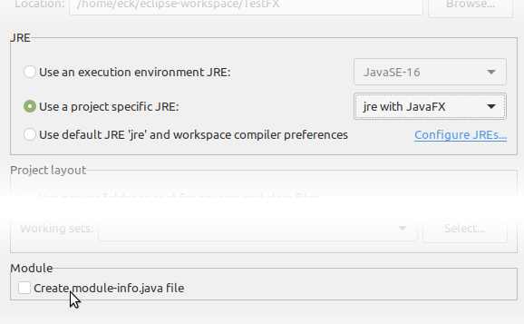
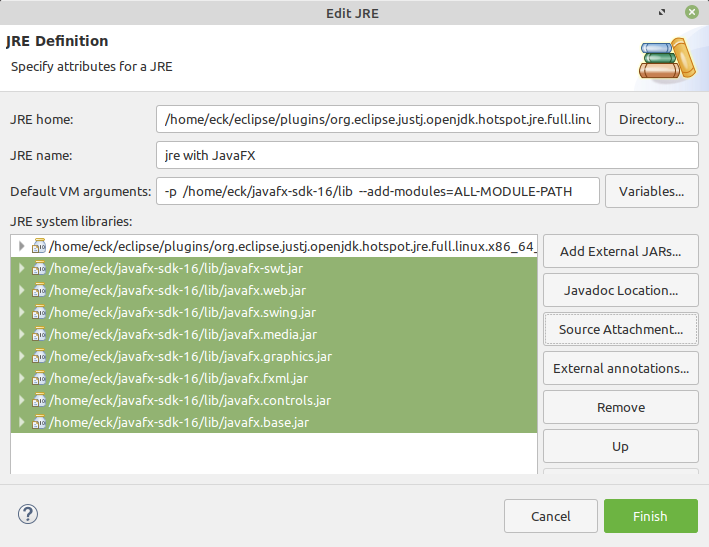

Section 2.6
Programming Environments
Although the Java language is highly standardized, the procedures for creating, compiling, and editing Java programs vary widely from one programming environment to another. There are two basic approaches: a command line environment, where the user types commands and the computer responds, and an integrated development environment (IDE), where the user uses the keyboard and mouse to interact with a graphical user interface. While there is essentially just one command line environment for Java programming, there are several common IDEs, including Eclipse, NetBeans, IntelliJ IDEA, and BlueJ. I cannot give complete or definitive information on Java programming environments in this section, but I will try to give enough information to let you compile and run the examples from this textbook using the command line, Eclipse, or BlueJ. (Readers are strongly encouraged to read, compile, and run the examples. Source code for sample programs and solutions to end-of-chapter exercises can be downloaded from the book's web page, http://math.hws.edu/javanotes.)
One thing to keep in mind is that you do not have to pay any money to do Java programming (aside from buying a computer, of course). Everything that you need can be downloaded for free on the Internet.
This textbook can be used with Java 8 and later. As of the release of Version 8.1.3 of the book in August 2021, the current version of Java is Java 16. Significant changes both in the Java language and in the Oracle corporation's policies concerning Java have been made since the release of Java 8. Unfortunately, the changes have made it somewhat more difficult to install Java and get it up and running. In this section, I will try to give you enough information to make it possible to install Java and use it with this textbook.
One of the changes made to Java was to the release schedule. New versions of Java are now released much more frequently than in the past, about twice a year, but only some of the releases are "long-term support" (LTS) releases that will continue to receive bug fixes and security updates over an extended period of time. Java 8 and Java 11 are long-term support releases. The upcoming Java 17, due to be released in September 2021, will be another long-term support release. In fact, only Java 8, 11, and 16 are currently officially supported (although for the purposes of this textbook, using another version that is no longer receiving support is not a real problem). As of August 2021, people are most likely to use Java 11 or Java 16. When Java 17 is released, it will be the preferred version.
2.6.1 Getting JDK and JavaFX
The basic development system for Java programming is usually referred to as a JDK (Java Development Kit). For this textbook, you need a JDK for Java 8 or later. Note that Java comes in two versions: a Development Kit version (the JDK) and a Runtime Environment version (the JRE). A Runtime Environment can be used to run Java programs, but it does not allow you to compile your own Java programs. A Development Kit includes the Runtime Environment but also lets you compile programs. (Since the release of Java 11 it has become harder find a separate JRE download, but you will still see the term used — sometimes to refer, in fact, to a JDK.) A JDK will include the command line environment that you need to work with Java on the command line. If you decide to use an IDE, you might still need to download a JDK first; note, however, that both the Eclipse IDE and BlueJ now include a JDK, so you do not need to download a separate JDK to use them.
Java was developed by Sun Microsystems, Inc., which was acquired by the Oracle corporation. It is possible to download a JDK directly from Oracle's web site, but starting with Java 11, the Oracle JDK is meant mostly for commercial use. For personal and educational use, it is probably preferable to use OpenJDK, which has the same functionality as the version available from Oracle and is distributed under a fully free, open-source license. Although OpenJDK can be downloaded from https://jdk.java.net/, which is also owned by Oracle, I recommend downloading from AdoptOpenJDK at this address:
This site has OpenJDKs for a wider range of platforms, and it provides installers for Mac OS and Windows that make it easier to set up Java on those platforms. (The installer for Mac OS is a .pkg file, and the installer for Windows is a .msi file.) The sample programs and exercises in this textbook will work with JDK versions as old as Java 8.
If you download a JDK installer for Windows or Mac OS from AdoptOpenJDK, you can just double-click the installer file to start the installation, if it does not start automatically. If you use the default installation, the installer will set up your computer so that you can use the javac and java commands on the command line.
The GUI programs in this book use a programming library known as JavaFX, which must be downloaded separately from the OpenJDK. You will need to download JavaFX even if you use Eclipse for all of your Java work. (BlueJ comes with JavaFX.) You can download the JavaFX library from
https://gluonhq.com/products/javafx/
You should get the JavaFX "SDK"—not the "jmods"—for your operating system (Linux, Mac OS, or Windows). You should get the version number that matches the version number of the OpenJDK that you downloaded (but it should be OK as long as the major version numbers match; for example, JavaFX 11.0.2 should work with JDK 11.0.9).
When you download the JavaFX SDK, it will be in the form of a compressed archive file. You will need to extract the contents of the archive. Usually, simply double-clicking the icon of the archive file will either extract the contents or open a program that you can use to extract the contents. You will get a directory with a name something like javafx-sdk-11.0.2. You can put the directory anywhere on your computer, but you will need to know where it is located.
(An OpenJDK can also be downloaded as a compressed archive, which you can decompress and place anywhere on your computer. However, to use the javac and java commands, you will either need to put the bin directory from the OpenJDK directory on your PATH environment variable, or use full path names for the javac and java commands. The AdoptOpenJDK installers for Windows and for MacOS will take care of this detail for you.)
Note that if you are using Linux, then a recent OpenJDK and JavaFX should be available in the software repositories for your version of Linux, and all that you need to do is use your Linux software installer tool to install them. (Exactly what that means depends on the version of Linux that you are using. Search for packages with names containing "openjdk" and "openjfx".) You will still need to know where the JavaFX SDK directory is located; on my Linux computer, it's /usr/share/openjfx. It is also possible to download Linux versions from the AdoptOpenJDK and JavaFX web sites.
2.6.2 Command Line Environment
Many modern computer users find the command line environment to be pretty alien and unintuitive. It is certainly very different from the graphical user interfaces that most people are used to. However, it takes only a little practice to learn the basics of the command line environment and to become productive using it. It is useful to know how to use the command line, and it is particularly important for computer science students, but you can skip this subsection and the next if you plan to do all of your work with Java in an IDE.
To use a command line programming environment, you will have to open a window where you can type in commands. In Windows, you can open such a command window by running a program named cmd. In Mac OS, you want to run the Terminal program, which can be found in the Utilities folder inside the Applications folder. In Linux, there are several possibilities, including a very old program called xterm; but try looking for "Terminal" in your Applications menu.
No matter what type of computer you are using, when you open a command window, it will display a prompt of some sort. Type in a command at the prompt and press return. The computer will carry out the command, displaying any output in the command window, and will then redisplay the prompt so that you can type another command. One of the central concepts in the command line environment is the current directory or working directory, which contains files that can be used by the commands that you type. (The words "directory" and "folder" mean the same thing.) Often, the name of the current directory is part of the command prompt. You can get a list of the files in the current directory by typing in the command dir (on Windows) or ls (on Linux and Mac OS). When the window first opens, the current directory is your home directory, where your personal files are stored. You can change the current directory using the cd command with the name of the directory that you want to use. For example, if the current directory is your home directory, then you can change into your Desktop directory by typing the command cd Desktop (and then pressing return).
You might want to create a directory (that is, a folder) to hold your Java work. For example, you might create a directory named javawork in your home directory. You can do this using your computer's GUI; another way is to use the command line: Open a command window. If you want to put your work directory in a different folder from your home directory, cd into the directory where you want to put it. Then enter the command mkdir javawork to make the directory. When you want to work on programming, open a command window and use the cd command to change into your Java work directory. Of course, you can have more than one working directory for your Java work; you can organize your files any way you like.
The most basic commands for using Java on the command line are javac and java. The javac command is used to compile Java source code, and java is used to run Java programs. These commands, and other commands for working with Java, can be found in a directory named bin inside the JDK directory. If you set things up correctly on your computer, it should recognize these commands when you type them on the command line. Try typing the commands java -version and javac -version. The output from these commands should tell you which version of Java is being used. If you get a message such as "Command not found," then Java is not correctly configured.
Java should already be configured correctly on Linux, if you have installed Java from the Linux software repositories. The same is true on Mac OS and Windows, if you have used an installer from AdoptOpenJDK.
To test the javac command, place a copy of HelloWorld.java into your working directory. (If you downloaded the Web site of this book, you can find it in the directory named chapter2 inside the directory named source; you can use your computer's GUI to copy-and-paste this file into your working directory. Alternatively, you can navigate to HelloWorld.java on the book's Web site and use the "Save As" command in your Web browser to save a copy of the file into your working directory.) Type the command:
javac HelloWorld.javaThis will compile HelloWorld.java and will create a bytecode file named HelloWorld.class in the same directory. Note that if the command succeeds, you will not get any response from the computer; it will just redisplay the command prompt to tell you it's ready for another command. You will then be able to run the program using the java command:
java HelloWorldThe computer should respond by outputting the message "Hello World!". Note that although the program is stored in a file named HelloWorld.class, the java command uses the name of the class, HelloWorld, not the name of the file.
Many of the sample programs for this book use TextIO to read input from the user (see Subsection 2.4.3). Since TextIO is not a standard part of Java, you must make it available to any program that uses it. This means that your working directory should contain a folder named textio, and inside that folder should be the file TextIO.java. You can copy TextIO.java from this book's source directory, or your can download it from the web site, but you should be sure to place it inside a folder named textio in the same directory as the program that uses TextIO.
Once you have TextIO.java you can run a sample program such as Interest2.java to test user input. First, compile the program with the command
javac Interest2.javaIf successful, this will create the compiled file named Interest2.class. But you will also notice that it creates the file TextIO.class inside the textio folder, if that file does not already exist. More generally, the javac command will compile not just the file that you specify but also any additional Java files that are needed. Once you have Interest2.class, you can run it using the command
java Interest2You will be asked to enter some information, and you will respond by typing your answers into the command window, pressing return at the end of each line. When the program ends, you will see the command prompt, and you can enter another command. (Note, by the way, that "java TextIO" would not make sense, since TextIO does not have a main() routine, and so it is not possible to execute it as a program.)
You can follow a similar procedure to run all of the examples in this book that do not use JavaFX. For running JavaFX programs, see the next subsection below.
To create your own programs, you will need a text editor. A text editor is a computer program that allows you to create and save documents that contain plain text. It is important that the documents be saved as plain text, that is without any special encoding or formatting information. Word processor documents are not appropriate, unless you can get your word processor to save as plain text. A good text editor can make programming a lot more pleasant. Linux comes with several text editors. On Windows, you can use notepad in a pinch, but you will probably want something better. For Mac OS, you might download the BBEdit application, which can be used for free. One possibility that will work on any platform is to use jedit, a programmer's text editor that is itself written in Java and that can be downloaded for free from www.jedit.org. Another popular cross-platform programming editor is Atom, available from atom.io.
To work on your programs, you can open a command line window and cd into the working directory where you will store your source code files. Start up your text editor program, such as by double-clicking its icon or selecting it from a Start menu. Type your code into the editor window, or open an existing source code file that you want to modify. Save the file into your working directory. Remember that the name of a Java source code file must end in ".java", and the rest of the file name must match the name of the class that is defined in the file. Once the file is saved in your working directory, go to the command window and use the javac command to compile it, as discussed above. If there are syntax errors in the code, they will be listed in the command window. Each error message contains the line number in the file where the computer found the error. Go back to the editor and try to fix one or more errors, save your changes, and then try the javac command again. (It's usually a good idea to just work on the first few errors; sometimes fixing those will make other errors go away.) Remember that when the javac command finally succeeds, you will get no message at all, or possibly just some "warnings"; warnings do not stop a program from running. Then you can use the java command to run your program, as described above. Once you've compiled the program, you can run it as many times as you like without recompiling it.
That's really all there is to it: Keep both editor and command-line window open. Edit, save, and compile until you have eliminated all the syntax errors. (Always remember to save the file before compiling it—the compiler only sees the saved file, not the version in the editor window.) When you run the program, you might find that it has semantic errors that cause it to run incorrectly. In that case, you have to go back to the edit/save/compile loop to try to find and fix the problem.
2.6.3 JavaFX on the Command Line
JavaFX is a collection of Java classes that can be used for making GUI programs. In this book, it is first used in Section 3.9 and is covered extensively in Chapter 6 and Chapter 13. It is also used in example programs in several other chapters. JavaFX was a standard part of the Oracle JDK for Java 8, but with OpenJDK and with any JDK for Java 11 and later, JavaFX requires some special treatment. This subsection explains how to use JavaFX on the command line with Java 11 or later. It assumes that you have already downloaded the JavaFX SDK, as described above. Starting with Java 11, JavaFX is distributed as a set of "modules." (See Subsection 4.6.4) The modules are stored in .jar files in the lib subdirectory of the JavaFX SDK. When using the javac and java commands on a program that uses JavaFX, you need to tell the command where to find the JavaFX modules.
The modules are specified for the javac and java commands using two command options: --module-path and --add-modules. The first option specifies the directory that contains the module .jar files, and the second says which modules you actually want to use. For the purposes of this textbook, you can set the value of --add-modules to ALL-MODULE-PATH, which makes all of JavaFX available to your program. The value of --module-path is a path to the lib directory that contains the JavaFX .jar files. For example, let's say that the JavaFX directory is named openjfx-sdk-11 and that it is in my home directory, /home/eck. Then the full path to the lib directory is /home/eck/openjfx-sdk-11/lib, and the javac command for compiling JavaFX programs would be:
javac --module-path=/home/eck/openjfx-sdk-11/lib --add-modules=ALL-MODULE-PATHfollowed by the .java files that you want to compile. Exactly the same options would be used with the java command to run JavaFX programs. The option --module-path can also be abbreviated to -p, with no equals sign. So this can also be written
javac -p /home/eck/openjfx-sdk-11/lib --add-modules=ALL-MODULE-PATHIf you don't know the full path to the JavaFX SDK, open a command window and use the cd command to move to the SDK's lib directory. On Mac or Linux, enter the command pwd to print out the full path of the working directory. On windows, use the command cd, with no directory specified, to print out the path. Use the output as the value for the --module-path. On windows, a typical java command for use with javafx might look something like this:
java -p C:\Users\eck\openjfx-sdk-11\lib --add-modules=ALL-MODULE-PATHIf the path name includes a space, or certain other special characters, it must be enclosed in quotation marks.
Of course, this is very verbose, and it would be nice not to have to retype it all the time. On Mac OS or Linux, it is easy to define aliases, which are shortcuts for long commands. On my computer, I used an alias to define a jfxc command for compiling JavaFX programs. In the alias, I used the full path name of the javac command as well as the full path name of the JavaFX lib directory. This allowed me to use a JDK that was not officially installed on the computer. The alias is defined as follows, except that this must all be typed on one line:
alias jfxc='/home/eck/jdk-11.0.7/bin/javac
--module-path=/home/eck/javafx-sdk-11/lib
--add-modules=ALL-MODULE-PATH'Similarly, I defined an alias for running JavaFX programs (again, all on one line):
alias jfx='/home/eck/jdk-11.0.7/bin/java
--module-path=/home/eck/javafx-sdk-11/lib
--add-modules=ALL-MODULE_PATH'To make these alias definitions permanent on my Linux computer, I added them to a file named .bashrc. On Mac OS, I would put them in a file named .zshrc for Mac OS 10.15 and later or in a file named .bash_profile (for earlier versions of Mac OS). The file must be placed in your home directory. The file might or might not already exist; if it doesn't exist, you can create it. The file is executed whenever you open a Terminal window. (In particular, changes do not become effective until you open a new Terminal.) Note that the file name begins with a period, which makes it a "hidden file." That means that it won't show up in a usual directory listing or file browser. (On Linux, it's usually easy to set a file browser window to show hidden files; try looking in a "View" menu. On Mac, it's not so easy. In any case, on the command line, you can get a directory listing that includes hidden files using the command ls -a — with a space after ls. If you have trouble working with a hidden file, one option is to rename it to be a non-hidden file that you can edit, and then rename it back. The mv command can be used to rename files. For example: mv .zshrc temp and mv temp .zshrc.)
Unfortunately, Windows currently does not have an equivalent of a .bashrc or .zshrc for its cmd command window. One option is to make a batch script file to run the command. For compilation, you could create a file named jfxc.bat containing just one line similar to
javac -p C:\Users\eck\javafx-sdk-11\lib --add-modules=ALL-MODULE-PATH %*but, of course, using the appropriate JavaFX location for your own computer. The "%*" at the end represents the inputs to the javac command. The file can be in the current directory or somewhere on the system path, such as the JDK bin directory. Then you can use jfxc as a command for compiling JavaFX programs:
jfxc MyJavaFXProgram.javaYou can handle the java command with a similar .bat file.
2.6.4 Eclipse IDE
In an Integrated Development Environment, everything you need to create, compile, and run programs is integrated into a single package, with a graphical user interface that will be familiar to most computer users. There are a number of different IDEs for Java program development, ranging from fairly simple wrappers around the JDK to highly complex applications with a multitude of features. For a beginning programmer, there is a danger in using an IDE, since the difficulty of learning to use the IDE, on top of the difficulty of learning to program, can be daunting. However, for my own programming, I generally use the Eclipse IDE, and I introduce my students to it after they have had some experience with the command line. I will discuss Eclipse in some detail and a much simpler alternative, BlueJ, more briefly. IDEs have features that are very useful even for a beginning programmer, although a beginner will want to ignore many of their advanced features.
Unless you happen to be using Oracle's JDK for Java 8, 9, or 10, using Eclipse for JavaFX programs will require some extra configuration. The next subsection discusses using JavaFX in Eclipse. This subsection tells you how to use it for programs that use only standard Java classes.
You can download an Eclipse IDE from eclipse.org. When I install Eclipse, I get the "Eclipse IDE for Java Developers" package (not the "installer") from this web page:
https://www.eclipse.org/downloads/packages/
For Windows and Linux, the download is a compressed archive file. You can simply extract the contents of the archive and place the resulting directory wherever you want it on your computer. You will find the Eclipse application in that directory, and you can start Eclipse by double-clicking the application icon. For Mac OS, the download is a .dmg file that contains the Eclipse application. You can open the .dmg file and drag the application to any location that you prefer (probably the Applications folder).
Eclipse is a free program. It is itself written in Java. Recent versions of Eclipse include a copy of an OpenJDK (although Eclipse calls it a JRE), so you can use it without downloading a separate JDK. The June 2021 version includes a Java 16 SDK. The upcoming September 2021 version is likely to use Java 17.
The first time you start Eclipse, you will be asked to specify a workspace, which is the directory where your work will be stored. You can accept the default name, or provide one of your own. You can use multiple workspaces and select the one that you want to use at startup. When a new workspace is first opened, the Eclipse window will be filled by a large "Welcome" screen that includes links to extensive documentation and tutorials. You should close this screen, by clicking the "X" next to the word "Welcome"; you can get back to it later by choosing "Welcome" from the "Help" menu.
The Eclipse GUI consists of one large window that is divided into several sections. Each section contains one or more views. For example, a view can be a text editor, it can be a place where a program can do I/O, or it can contain a list of your projects. If there are several views in one section of the window, then there will be tabs at the top of the section to select the view that is displayed in that section. This will happen, for example, if you have several editor views open at the same time.
Each view displays a different type of information. The whole set of views in the window is called a perspective. Eclipse uses different perspectives, that is, different sets of views of different types of information, for different tasks. For compiling and running programs, the only perspective that you will need is the "Java Perspective," which is the default. As you become more experienced, you might want to use the "Debug Perspective," which has features designed to help you find semantic errors in programs. There are small buttons in the Eclipse toolbar that can be used to switch between perspectives.
The Java Perspective includes a large area in the center of the window that contains text editor views. This is where you will create and edit your programs. To the left of this is the Package Explorer view, which will contain a list of your Java projects and source code files. To the right are one or more other views that you might or might not find useful; I usually close them by clicking the small "X" next to the name of each one. Several other views that will certainly be useful appear under different tabs in a section of the window below the editing area. If you accidently close one of the important views, such as the Package Explorer, you can get it back by selecting it from the "Show View" submenu of the "Window" menu. You can also reset the whole window to its default contents by selecting "Reset Perspective" from the "Window" menu.
To do any work in Eclipse, you need a project. To start a Java project, go to the "New" submenu in the "File" menu, and select the "Java Project" command. In the window that pops up, you will need to fill in a "Project Name," which can be anything you like. There are two other sections of the window that you might need to pay attention to:

If the project will use JavaFX, and if you have configured the workspace for JavaFX as described in the next subsection, then you should make sure that the JRE configuration that you have created for JavaFX is selected in the "JRE" section of the dialog box, as shown here. And for any program from this textbook, you should uncheck the option labeled "Create module-info.java file" in the "Module" section. (The "Module" section appears in the June 2021 version of Eclipse but not in earlier versions. For earlier versions, you might be asked whether you want to create module-info.java. For the programs in this book, you should always say no.) This textbook does not use modular programs. Note that the workspace will remember these two settings for the next time that you create a new project and that it is harmless to use a JRE with JavaFX support even for a project that does not use JavaFX.
After entering a project name, and changing the options if necessary, click the "Finish" button. Remember to say "Don't Create" if Eclipse asks you whether you want to create "module-info.java". The project should appear in the "Package Explorer" view on the left side of the Eclipse window. Click on the small triangle or plus sign next to the project name to see the contents of the project. Assuming that you use the default settings, there should be a directory named "src," which is where your Java source code files will go. The project also contains the "JRE System Library". This is the collection of standard built-in classes that come with Java; if you have configured the project for JavaFX, it will also include the JavaFX classes.
To run any of the sample Java programs from this textbook, you need to copy the source code file into your Eclipse Java project. Assuming that you have downloaded the source code file onto your computer, you can copy-and-paste it into the Eclipse window. (Right-click the file icon (or control-click on Mac OS); select "Copy" from the pop-up menu; then right-click the project's src folder in the Eclipse window, and select "Paste". Be sure to paste it into the src folder, not into the project itself; files outside the src folder are not treated as Java source code files.) Alternatively, you can try dragging the file icon from a file browser window onto the src folder in the Eclipse window.
To use the TextIO-based examples from this textbook, you must add the source code file TextIO.java to your project. This file has to be in a "package" named textio. If you have downloaded TextIO.java and placed it into a folder named "textio," as described above, then you can simply copy-and-paste the textio folder into the "src" folder of your project. Alternatively, you can create the textio package using the "New/Package" command from the "File" menu. This will make a folder named "textio" in your project, inside the src folder, and you can then copy-and-paste TextIO.java into that folder. In any case, package textio should appear under "src" in your project, with TextIO.java inside it. (You can drag files from one location to another in the Package Explorer view, if you accidently put a file in the wrong location.)
Once a Java program is in the project, you can open it in an editor by double-clicking the file name in the "Package Explorer" view. To run the program, right-click in the editor window, or on the file name in the Package Explorer view (or control-click in Mac OS). In the menu that pops up, go to the "Run As" submenu, and select "Java Application". The program will be executed. If the program writes to standard output, the output will appear in the "Console" view, in the area of the Eclipse window below the editing area. If the program uses TextIO or Scanner for input, you will have to type the required input into the "Console" view—click the "Console" view before you start typing so that the characters that you type will be sent to the correct part of the window. (For an easier way to run a program, find and click the small "Run" button in Eclipse's tool bar. This will run either the program in the editor window, the program selected in the Package Explorer view, or the program that was run most recently, depending on context.) Note that when you run a program in Eclipse, it is compiled automatically. There is no separate compilation step.
You can have more than one program in the same Eclipse project, or you can create additional projects to organize your work better. Remember to place a copy of TextIO.java, inside a folder named textio, in any project that requires it.
To create a new Java program in Eclipse, you must create a new Java class. To do that, right-click the Java project name in the "Project Explorer" view. Go to the "New" submenu of the popup menu, and select "Class". (Alternatively, there is a small icon in the toolbar at the top of the Eclipse window that you can click to create a new Java class.) In the window that opens, type in the name of the class that you want to create. The class name must be a legal Java identifier. Note that you want the name of the class, not the name of the source code file, so don't add ".java" at the end of the name. The window also includes an input box labeled "Package" where you can specify the name of a package to contain the class. Most examples in this book use the "default package," but you can create your own programs in any package. To use the default package, the "Package" input box should be empty. Finally, click the "Finish" button to create the class. The class should appear inside the "src" folder, in a folder corresponding to its package. The new file should automatically open in the editing area so that you can start typing your program.
Eclipse has several features that aid you as you type your code. It will underline any syntax error with a jagged red line, and in some cases will place an error marker in the left border of the edit window. If you hover the mouse cursor over the error marker or over the error itself, a description of the error will appear. Note that you do not have to get rid of every error immediately as you type; many errors will go away as you type in more of the program! If an error marker displays a small "light bulb," Eclipse is offering to try to fix the error for you. Click the light bulb—or simply hover your mouse over the actual error—to get a list of possible fixes, then click the fix that you want to apply. For example, if you use an undeclared variable in your program, Eclipse will offer to declare it for you. You can actually use this error-correcting feature to get Eclipse to write certain types of code for you! Unfortunately, you'll find that you won't understand a lot of the proposed fixes until you learn more about the Java language, and it is not a good idea to apply a fix that you don't understand—often that will just make things worse in the end.
Eclipse will also look for spelling errors in comments and will underline them with jagged red lines. Hover your mouse over the error to get a list of possible correct spellings.
Another essential Eclipse feature is content assist. Content assist can be invoked by typing Control-Space. It will offer possible completions of whatever you are typing at the moment. For example, if you type part of an identifier and hit Control-Space, you will get a list of identifiers that start with the characters that you have typed; use the up and down arrow keys to select one of the items in the list, and press Return or Enter. (You can also click an item with the mouse to select it, or hit Escape to dismiss the list.) If there is only one possible completion when you hit Control-Space, it will be inserted automatically. By default, Content Assist will also pop up automatically, after a short delay, when you type a period or certain other characters. For example, if you type "TextIO." and pause for just a fraction of a second, you will get a list of all the subroutines in the TextIO class. Personally, I find this auto-activation annoying. You can disable it in the Eclipse Preferences. (Look under Java / Editor / Content Assist, and turn off the "Enable auto activation" option.) You can still call up Code Assist manually with Control-Space.
Once you have an error-free program, you can run it as described above. If you find a problem when you run it, it's very easy to go back to the editor, make changes, and run it again.
2.6.5 Using JavaFX in Eclipse
You are probably using a JDK that does not include JavaFX, which means that you need to configure your Eclipse projects to use it. There are many ways to do that. My goal here is not to present the most "correct" or general way to do it; I just want to make it possible to easily work with basic JavaFX programs like the ones that come with this textbook. I will discuss a one-time configuration of an Eclipse workspace that seems to work reliably for all the versions of Eclipse in which I have tried it.
You need to get a JavaFX SDK from the JavaFX download site, as discussed above. You want an SDK whose major version number is the same as the JDK version that is included in Eclipse. For the June 2021 version of Eclipse, that would be JavaFX SDK 16.
To begin, open the Eclipse preferences, using the "Preferences" command (which is in the "Windows" menu on Linux and Windows and in the "Eclipse" menu on Mac OS). Expand the Java section in the list on the left, by clicking the small triangle or plus sign next to the word "Java." Click on "Installed JREs." You will see a list of the Java environments that Eclipse knows about. In a new workspace, there should be just one, showing the JRE that is included in Eclipse. You can click on that JRE to select it and click the "Duplicate" button to make a copy. You can then add JavaFX support to the copy. (You could also just "Edit" the original JRE, or "Add" a completely new configuration. I recommend using "Duplicate", but if you add a new configuration, you would have the freedom to use a different JDK that you have downloaded, along with a matching JavaFX.)
When you "Duplicate" an existing JRE, you should see a dialog box similar to the following. The "JRE home" and "JRE name" will already be filled in, and there will be one entry under "JRE system libraries".

You should change the "JRE name" to something that indicates that it supports JavaFX. This is just so that you will recognize the name when you create a project, as discussed in the previous subsection. But the main thing is to add the JavaFX configuration.
Remember that to use JavaFX, you need to make it available to your program both at compile time and at run time. The first step in the configuration is to make it available at compile time. To do that, you want to add the JavaFX .jar files to the JRE system libraries: Click the "Add External JARs" button, and navigate to the lib directory in the JavaFX SDK that you downloaded or installed. You should see the JavaFX .jar files. Select them all, and click "OK". They should appear in the "JRE system libraries" list.
The second step is to configure the JavaFX source files. This optional step will allow Eclipse to find the documentation for JavaFX, which can be very useful when you are writing programs. For this step, make sure that all of the JavaFX jar files are selected in the list of .jar files. Click the "Source Attachment" button. In the "Source Attachment Configuration" dialog box, select "External Location", and click "External File". Select the file src.zip from the JavaFX lib directory, and click "OK". That's all there is to it.
Finally, you must make JavaFX available to your programs at run time. To do that, you need to fill in the "Default VM arguments" input box by typing in the JavaFX command line options for the java command. The input box contains options that will be added to the java command every time you run a program in Eclipse using this JDK. You should type the same options that you would use on the java command line, as discussed above. The value of the -p (or --module-path) option is the location of the JavaFX lib directory. It should be exactly the same as the beginning of the paths for the JavaFX .jar files as shown in the "JRE system libraries" list. The value for --add-modules can be ALL-MODULE-PATH, as shown in the illustration.
When everything is set up, click "Finish" and then click "Apply and Close" in the main "Preferences" dialog box. When you create a new Java project in the workspace, make sure that the JRE that you set up to use JavaFX is selected in the project creation dialog box. Look in the "JRE" section of the dialog box, select "Use project-specific JRE," and select the appropriate JRE from the popup menu. You should then be able to use JavaFX in that project. If not, check your JRE configuration. You can "Edit" it in the same Java preferences where you set it up in the first place. If you can't compile JavaFX programs, make sure that you are using a JavaFX SDK with the same major version number as the built-in JDK in Eclipse (JavaFX 16 for the June 2021 version of Eclipse). If you can compile JavaFX programs but not run them, then the problem is likely to be with the "Default VM arguments".
(As a side note, it is possible to use the JDK that is now included with Eclipse on the command line. That JDK is a directory inside the Eclipse installation, with a long, complex name. The best way to find the name might be to open The "Installed JREs" section of the Eclipse preferences, as described above, select the built-in JRE in the list of "Installed JREs", and click "Edit." The name of the JDK directory will be in the "JRE home" section of the dialog, and you can copy-and-paste it from there. You need to add /bin— or \bin on Windows—to that directory name to get the name of the directory that contains the JDK command line programs such as javac. You can add the full name of that bin directory to your PATH environment variable, or you can use full path names for the javac and java commands.)
2.6.6 BlueJ
Finally, I will mention BlueJ, a small IDE that is designed specifically for people who are learning to program. It is much less complex than Eclipse, but it does have some features that make it useful for education. BlueJ can be downloaded from bluej.org. There are installers available for Windows, MacOS, and Windows. As of August 2021, the installers include OpenJDK 11 as well as JavaFX 11, so you will not need to do any additional downloading or configuration. There is also a generic installer that requires you to download a JDK and JavaFX separately. When you run the generic installer, BlueJ will ask you to input the locations of the JDK and JavaFX. (The current version of the generic installer in July 2021 did not work for me with OpenJDK 16 but did work with OpenJDK 15. It will certainly work with OpenJDK 11.)
In BlueJ, you can begin a project with the "New Project" command in the "Project" menu. A BlueJ project is simply a folder. When you create a project, you will have to select a folder name that does not already exist. The folder will be created and a window will be opened to show the contents of the folder. Files are shown as icons in the BlueJ window. You can drag .java files from the file system onto that window to add files to the project; they will be copied into the project folder as well as shown in the window. You can also copy files directly into the project folder, but BlueJ won't see them until the next time you open the project. When you restart BlueJ, it should show the project that you were working on most recently, but you can open any project with a command from the "Project" menu.
There is a button in the project window for creating a new class. An icon for the class is added to the window, and a .java source code file is created in the project folder. The file is not automatically opened for editing. To edit a file, double-click its icon in the project window. An editor will be opened in a separate window. (A newly created class will contain some default code that you probably don't want; you can erase it and add a main() routine instead.) The BlueJ editor does not show errors as you type. Errors will be reported when you compile the program. Also, it does not offer automatic fixes for errors. It has a less capable version of Eclipse's Content Assist, which seems only to work for getting a list of available subroutines in a class or object; call up the list by hitting Control-Space after typing the period following the name of a class or object.
An editor window contains a button for compiling the program in the window. There is also a compile button in the project window, which compiles all the classes in the project.
To run a program, it must already be compiled. Right-click the icon of a compiled program. In the menu that pops up, you will see "void main(String[] args)". Select that option from the menu to run the program. Just click "OK" in the dialog box that pops up. A separate window will open for input/output.
One of the neatest features of BlueJ is that you can actually use it to run any subroutine, not just main. If a class contains other subroutines, you will see them in the list that you get by right-clicking its icon. A pop-up dialog allows you to enter any parameters required by the routine, and if the routine is a function, you will get another dialog box after the routine has been executed to tell you its return value. This allows easy testing of individual subroutines. Furthermore, you can also use BlueJ to create new objects from a class. An icon for the object will be added at the bottom of the project window, and you can right-click that icon to get a list of subroutines in the object. This will, of course, not be useful to you until we get to object-oriented programming in Chapter 5.
2.6.7 The Problem of Packages
Every class in Java is contained in something called a package. Classes that are not explicitly put into a package are in the "default" package. All of Java's standard classes are in named packages. This includes even classes like String and System, which are in a package named java.lang. Classes in java.lang are automatically imported into any Java file, but classes in other packages must be imported using an import directive. My TextIO class is in a package named textio, and it must be imported into a program that wants to use it. I will discuss packages in greater detail in Section 4.6. For now, you just need to know some basic facts.
Although most of my examples are in the default package, the use of the default package is in fact discouraged, according to official Java style guidelines. Nevertheless, I have chosen to use it, since it seems easier for beginning programmers to avoid packages as much as possible, at least at first. If Eclipse tries to put a class into a package, you can delete the package name from the class-creation dialog to get it to use the default package instead. But if you do create a class in a package, the source code starts with a line that specifies which package the class is in. For example, if the class is in a package named test.pkg, then the first line of the source code will be
package test.pkg;For example, the source code for TextIO begins with "package textio;". I put TextIO in a package because a class that is in a non-default package cannot use a class from the default package. That is, if TextIO were in the default package, then it could only be used by programs that are also in the default package. (In fact, in earlier versions of this textbook, TextIO was in the default package. I have moved it to package textio for Version 8 of the book.)
When packages are used in a command-line environment, some complications arise. For example, if a program is in a package named test.pkg, then the source code file must be in a subdirectory named "pkg" inside a directory named "test" that is in turn inside your main Java working directory. Nevertheless, when you compile or execute the program, you should be working in the main directory, not in the subdirectory. When you compile the source code file, you have to include the name of the directory in the command: For example, for a program in package test.pkg use "javac test/pkg/ClassName.java" on Linux or Mac OS, or "javac test\pkg\ClassName.java" on Windows. The command for executing the program is then "java test.pkg.ClassName", with a period separating the package name from the class name.
2.6.8 About jshell
I will mention one more command-line tool for working with Java: jshell. The jshell command is a standard part of the JDK for Java 9 or later. If you have Java 9 or later, and if you can use the javac and java commands on the command line, then you can also use jshell. The purpose of jshell is to let you type in and execute Java code without the bother of creating a .java file and writing a main program. To start jshell, just enter the command on a line by itself. You will get a jshell prompt where you can enter either a Java statement or a Java expression. If you enter a statement, it will be executed. If you enter an expression, its value will be printed. You do not have to place a semicolon at the end of a line. Here is a short example of a jshell session. The text typed by the user is shown in bold.
$ jshell
| Welcome to JShell -- Version 11.0.7
| For an introduction type: /help intro
jshell> System.out.println("Hello World")
Hello World
jshell> int x = 42
x ==> 42
jshell> x * x
$3 ==> 1764
jshell> /exit
| GoodbyeUsing jshell can be a great way to learn Java and to experiment with its features. I won't give any more detailed information about it in this book, but you can learn more at
https://docs.oracle.com/en/java/javase/11/jshell/introduction-jshell.html
or you can use the /help command inside jshell to learn more about it.